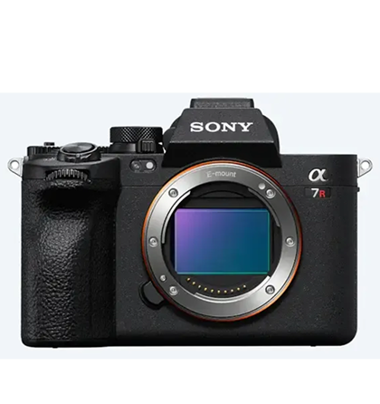

라인업
인터랙티브
핵심기술
악세서리

세밀한 디테일을 담다
α7R V는 61MP 고해상도, AI 기반 피사체 인식 AF, 8단 손떨림
보정으로 정밀한 촬영과 안정된 결과물을 제공합니다.
해상도
연속 촬영 속도
AF/AE 계산
손떨림 보정
이미지 프로세서
손떨림 보정
영상 성능
61.0MP
최대 10fps
AI 기반 피사체 인식 AF
최대 8스톱 (5축 보정)
BIONZ XR
최대 8.5스톱 (중앙 기준)
8K 24p / 4K 60p
10bit 4:2:2
S-Cinetone 지원